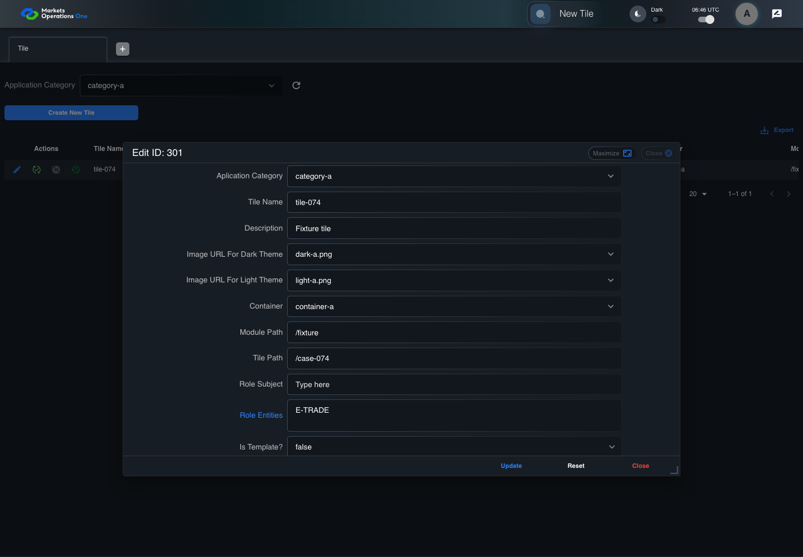
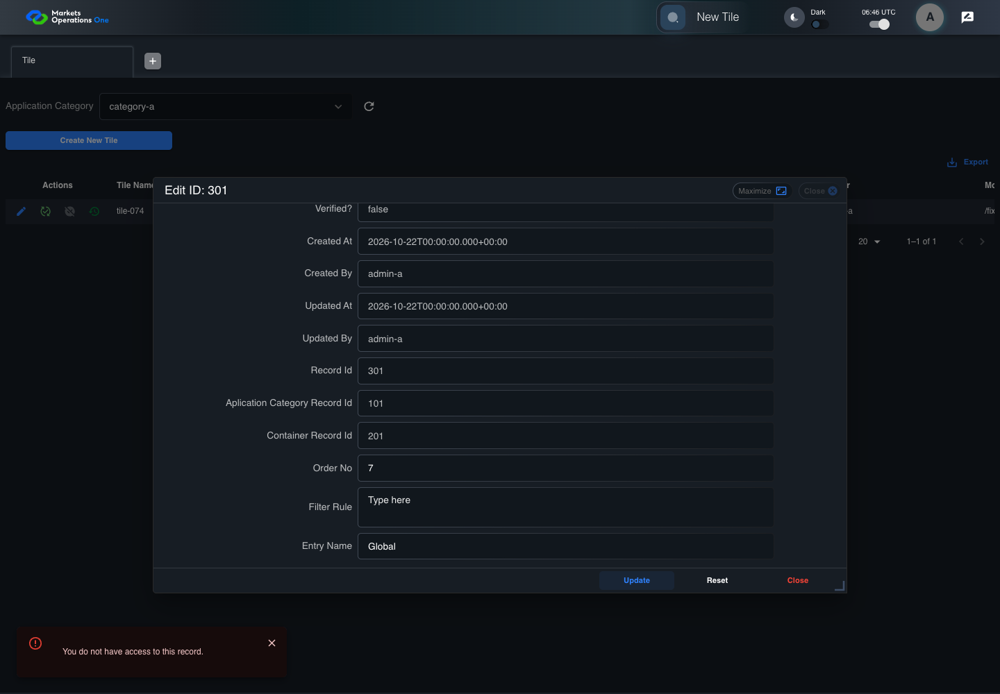

BFF-ADM-074 current BFF administration through actual UI
PASS · application/run-072/bff-adm-074-current-bff-administration-through-actual-ui-581c9e290757-attempt-1 · ACTUAL_APPLICATION_LOCAL_SERVICES
Actual current React and exact-current BFF admin controllers/services/JPA with actual migration DDL in disposable PostgreSQL. Controlled OUD/EMS2 identities and local Spring bootstrap. Fixture SQL seeds/mutates isolated records; service errors are actual database errors. Undefined agreed messages remain unresolved acceptance.
2026-10-22T06:46:52.280Z to 2026-10-22T06:46:59.368Z
Assertions and result · Artifact manifest · Exact run inputs and source hashes
Result SHA-256:346818c701446ec30f5233dedf4c64c360bc2c4bb30408fde1456aa410ad1f56Machine observations
- actual-identity-projection.json
28841c756fd2b91e585c91c260ddcd289592851be3174c722e2d82cf38574ba4 - baseline-inputs.json
09318ae0d489cab02ace7bdb94b517ceab91a0ab75897a6d5ee5dbceff165b47 - bff-boundary.json
50e866b1fb01e63d041c7c06ee794d4172f8b2eb49cd8868aacd2eaa3e8f62fc - committed-ui-submission-comparisons.json
acc3e0bc3f7a42ecd768ad82c562313029532c5ff63ae719e24a08c83b7da9d9 - empty-filter-rule-representation.json
fb2acc240aaf2594be0d2f223c23cda491748cc92d77592f2978577b93e55b6b - fixture-step-10.json
9031206c623425b9574819c37f2efa0852594131c81a0ab67f087e7d995ba909 - fixture-step-11.json
aa5c9db2a4c60f9e84afa4916bd79b9528d0ebcaef4862cb08a2d24e2d353e1d - fixture-step-12.json
2fcb1029f6e9e71fd0f4da2a3a9576d01d764004aef0e692b58a16614b657402 - fixture-step-13.json
5d1e6c51f7214553ae2dc24e2c85be308d605264a7bcbc0145a14ee4cde354ac - fixture-step-6.json
cd334e1d61f6e491fca9e7769761bb11789ce7976f0bba7e6ce0e2a3ad875899 - fixture-step-7.json
50b866690131a12f07284ca500d0feddc54327df70c8a32f20f492ca6a106a02 - fixture-step-8.json
82720460dad2886517e9da09b878cf53e98169338ec6840207c48e683eb2d859 - fixture-step-9.json
f81441152081a809c65a4d15d199debaf90ec16b2c23f17353654a65d63b58a2 - initial-persisted-records.json
1c3b3840cbf684bf421c62782f9270517c12d892f3325aab863cedcf634d55b3 - persisted-after-submit.json
7513605d760f9847c5ddce72745464df4af423de5fdc5e0895a03637fdc955ee - reference-snapshot-3.json
d1e6f2d8861003c70a27b6a88992d0b272be7e7c3d5ee87a65d5637979050758 - reference-snapshot-4.json
7b8277311262c3beed7231376b16ef1f8c63f979f72cbc6ad36705ea93171d0d - ui-origin-bff-requests.json
fb2d0de5aa3a6c5dfb407b6d1ca649c7a31be80b1d3e8ef3b344806465cbcaf4
Screenshot capture: CAPTURED. Named frames: 24.
Step screenshot bindings: COMPLETE. 23/23 canonical steps have execution screenshots.
Bindings measure structural coverage only. They do not establish screenshot content quality or relevance.
Screenshot content review: NOT_REVIEWED. Recorded context: 0/24 frames. Identical image bytes: 0 repeated frames. Recorded context does not establish human visual review.
Canonical step timeline
Given Admin A uses subject "admin-a" with role "FMO_ADMIN" in an isolated authenticated browser
Execution: PASSED.1. step-01 Visible state after step 1: Given Admin A uses subject "admin-a" with role "FMO_ADMIN" in an isolated authenticated browser
2026-10-22T06:46:54.295Z · 1440×1000
Step: /Users/lushevol/code/github/ratan-release-impact/workbench/tasks/ui-test-coverage-20261022/test-cases.md:17816
SHA-256:0021a62bf6011087407f180def6a91a52a7d26f5b9668e26eb5e265224c5edf3And the controlled Tile fixture records the initial grid rows and persisted values
Execution: PASSED.2. step-02 Visible state after step 2: And the controlled Tile fixture records the initial grid rows and persisted values
2026-10-22T06:46:54.426Z · 1440×1000
Step: /Users/lushevol/code/github/ratan-release-impact/workbench/tasks/ui-test-coverage-20261022/test-cases.md:17817
SHA-256:8de150e8b24b45b1ae52d4fbb1f5e1c14de3001afc8af1c63755c9370da70e98And Category 101 has label "category-a" and Import Map 201 has Module Name "container-a"
Execution: PASSED.3. step-03 Visible state after step 3: And Category 101 has label "category-a" and Import Map 201 has Module Name "container-a"
2026-10-22T06:46:54.476Z · 1440×1000
Step: /Users/lushevol/code/github/ratan-release-impact/workbench/tasks/ui-test-coverage-20261022/test-cases.md:17818
SHA-256:7dc16ea0e6c7e7b21cc3f3922029b0f233eaf42efdc3810d6cff3b36411998dfAnd both references belong to "FMO_ADMIN" and the Tile page category filter value is Category 101
Execution: PASSED.4. step-04 Visible state after step 4: And both references belong to "FMO_ADMIN" and the Tile page category filter value is Category 101
2026-10-22T06:46:54.525Z · 1440×1000
Step: /Users/lushevol/code/github/ratan-release-impact/workbench/tasks/ui-test-coverage-20261022/test-cases.md:17819
SHA-256:63cebc5ce24c62c3a6705e6653ab0005c6833d24cc2ed472d802308142ab1ea7And the Tile grid has record "301" owned by "FMO_ADMIN"
Execution: PASSED.5. step-05 Visible state after step 5: And the Tile grid has record "301" owned by "FMO_ADMIN"
2026-10-22T06:46:54.580Z · 1440×1000
Step: /Users/lushevol/code/github/ratan-release-impact/workbench/tasks/ui-test-coverage-20261022/test-cases.md:17820
SHA-256:7f760bb00248a3e1a5c4029393b8a67246f88a2f7051f26eb56deffea2141bcfAnd the baseline fixture data defines "Tile Name" as "tile-074"
Execution: PASSED.6. step-06 Visible state after step 6: And the baseline fixture data defines "Tile Name" as "tile-074"
2026-10-22T06:46:54.645Z · 1440×1000
Step: /Users/lushevol/code/github/ratan-release-impact/workbench/tasks/ui-test-coverage-20261022/test-cases.md:17821
SHA-256:814bdb6ec3f39c242383be70d019096c4a08763bb5a42887792fa82a150e87a7And the baseline fixture data defines "Module Path" as "/fixture"
Execution: PASSED.7. step-07 Visible state after step 7: And the baseline fixture data defines "Module Path" as "/fixture"
2026-10-22T06:46:54.711Z · 1440×1000
Step: /Users/lushevol/code/github/ratan-release-impact/workbench/tasks/ui-test-coverage-20261022/test-cases.md:17822
SHA-256:1b0017e623156ea5ce42c6ea498c1e47dce4bc09eb6abb0426f07f548da9940aAnd the baseline fixture data defines "Tile Path" as "/case-074"
Execution: PASSED.8. step-08 Visible state after step 8: And the baseline fixture data defines "Tile Path" as "/case-074"
2026-10-22T06:46:54.778Z · 1440×1000
Step: /Users/lushevol/code/github/ratan-release-impact/workbench/tasks/ui-test-coverage-20261022/test-cases.md:17823
SHA-256:3652ad77e3323ff69b4ed8847de442b5295ca5c40981c81e43fd178e3b808345And the baseline fixture data defines "Role Entities" as "E-TRADE"
Execution: PASSED.9. step-09 Visible state after step 9: And the baseline fixture data defines "Role Entities" as "E-TRADE"
2026-10-22T06:46:54.844Z · 1440×1000
Step: /Users/lushevol/code/github/ratan-release-impact/workbench/tasks/ui-test-coverage-20261022/test-cases.md:17824
SHA-256:f5c1e4e345f259be1870962b926694531dbb3a1c75c00178e4ad618df3a1669fAnd the baseline fixture data defines "Filter Rule" as ""
Execution: PASSED.10. step-10 Visible state after step 10: And the baseline fixture data defines "Filter Rule" as ""
2026-10-22T06:46:54.911Z · 1440×1000
Step: /Users/lushevol/code/github/ratan-release-impact/workbench/tasks/ui-test-coverage-20261022/test-cases.md:17825
SHA-256:1a025ce5a1ca25f4dad7b166e23b1a1279feb7d15c628d20e043e23418912b15And the baseline Tile references use "Aplication Category" "category-a" and "Container" "container-a"
Execution: PASSED.11. step-11 Visible state after step 11: And the baseline Tile references use "Aplication Category" "category-a" and "Container" "container-a"
2026-10-22T06:46:54.964Z · 1440×1000
Step: /Users/lushevol/code/github/ratan-release-impact/workbench/tasks/ui-test-coverage-20261022/test-cases.md:17826
SHA-256:d9d584cf82c0879815a7fc2766b1968a6ab2de02715e4e46f691dd1bb19a7715And the installed request interceptor defines "applicationCategory.applicationCategoryId" as 102 on the next UI-originated Tile submission
Execution: PASSED.12. step-12 Visible state after step 12: And the installed request interceptor defines "applicationCategory.applicationCategoryId" as 102 on the next UI-originated Tile submission
2026-10-22T06:46:55.011Z · 1440×1000
Step: /Users/lushevol/code/github/ratan-release-impact/workbench/tasks/ui-test-coverage-20261022/test-cases.md:17827
SHA-256:7c4df1d8b59a07c7ae1c1452e954801429707f98df413571db99da1821bd22d3And reference "102" belongs to "OTHER_ADMIN" while all remaining references belong to "FMO_ADMIN"
Execution: PASSED.13. step-13 Visible state after step 13: And reference "102" belongs to "OTHER_ADMIN" while all remaining references belong to "FMO_ADMIN"
2026-10-22T06:46:55.061Z · 1440×1000
Step: /Users/lushevol/code/github/ratan-release-impact/workbench/tasks/ui-test-coverage-20261022/test-cases.md:17828
SHA-256:33c247225465802730836bf75af167fd33ff545c3cfd8cc74d5586a7019cc414When Admin A clicks the button labeled "Edit" in the Tile grid row with "Record Id" "301"
Execution: PASSED.14. step-14 Visible state after step 14: When Admin A clicks the button labeled "Edit" in the Tile grid row with "Record Id" "301"
2026-10-22T06:46:55.446Z · 1440×1000
Step: /Users/lushevol/code/github/ratan-release-impact/workbench/tasks/ui-test-coverage-20261022/test-cases.md:17829
SHA-256:8057ee92482c89df9dd6f59beed57daeaf57cfcf9f739a32937691b470fd394aThen the dialog titled "edit ID: 301" is visible on the Tile administration page
Execution: PASSED.15. step-15 Visible state after step 15: Then the dialog titled "edit ID: 301" is visible on the Tile administration page
2026-10-22T06:46:55.642Z · 1440×1000
Step: /Users/lushevol/code/github/ratan-release-impact/workbench/tasks/ui-test-coverage-20261022/test-cases.md:17830
SHA-256:45a326d63e86610950d5d4063a5e44524961b6fe6602c49263affcd280f1bbeaWhen Admin A fills the textbox labeled "Tile Name" with "tile-074" in dialog "edit ID: 301"
Execution: PASSED.16. step-16 Visible state after step 16: When Admin A fills the textbox labeled "Tile Name" with "tile-074" in dialog "edit ID: 301"
2026-10-22T06:46:56.143Z · 1440×1000
Step: /Users/lushevol/code/github/ratan-release-impact/workbench/tasks/ui-test-coverage-20261022/test-cases.md:17831
SHA-256:5ee584b49497865a4054472e346ce0652a42b0718cb03bb945f39b2d4096dbf1And Admin A fills the textbox labeled "Module Path" with "/fixture" in dialog "edit ID: 301"
Execution: PASSED.17. step-17 Visible state after step 17: And Admin A fills the textbox labeled "Module Path" with "/fixture" in dialog "edit ID: 301"
2026-10-22T06:46:56.582Z · 1440×1000
Step: /Users/lushevol/code/github/ratan-release-impact/workbench/tasks/ui-test-coverage-20261022/test-cases.md:17832
SHA-256:9d8c401c4e3b98b4f40ad8b194826a5be1cf41f50e45e45d793d97a6e3c0607aAnd Admin A fills the textbox labeled "Tile Path" with "/case-074" in dialog "edit ID: 301"
Execution: PASSED.18. step-18 Visible state after step 18: And Admin A fills the textbox labeled "Tile Path" with "/case-074" in dialog "edit ID: 301"
2026-10-22T06:46:57.018Z · 1440×1000
Step: /Users/lushevol/code/github/ratan-release-impact/workbench/tasks/ui-test-coverage-20261022/test-cases.md:17833
SHA-256:8f8931566225bdd1b4a081099ef3170bcc4c8958cc1390553272fb30598a07d4And Admin A fills the textarea labeled "Role Entities" with "E-TRADE" in dialog "edit ID: 301"
Execution: PASSED.
19. step-19 Visible state after step 19: And Admin A fills the textarea labeled "Role Entities" with "E-TRADE" in dialog "edit ID: 301"
2026-10-22T06:46:57.463Z · 1440×1000
Step: /Users/lushevol/code/github/ratan-release-impact/workbench/tasks/ui-test-coverage-20261022/test-cases.md:17834
SHA-256:168b2d72a6a5f56bc32f03e7966ac6396a7346f9649b78788ae6843e8f6d36f1And Admin A fills the textarea labeled "Filter Rule" with "" in dialog "edit ID: 301"
Execution: PASSED.20. step-20 Visible state after step 20: And Admin A fills the textarea labeled "Filter Rule" with "" in dialog "edit ID: 301"
2026-10-22T06:46:57.903Z · 1440×1000
Step: /Users/lushevol/code/github/ratan-release-impact/workbench/tasks/ui-test-coverage-20261022/test-cases.md:17835
SHA-256:53b81bf017162aabd914f442a805dcc8204faa691fccc43f4914ba971406a965And Admin A clicks the button labeled "Update" in dialog "edit ID: 301"
Execution: PASSED.21. step-21 Visible state after step 21: And Admin A clicks the button labeled "Update" in dialog "edit ID: 301"
2026-10-22T06:46:58.210Z · 1440×1000
Step: /Users/lushevol/code/github/ratan-release-impact/workbench/tasks/ui-test-coverage-20261022/test-cases.md:17836
SHA-256:29aef7d252c4429e31fdd7f4f4f39d2848eae96f5b6dfd90b86c10d5b1510727Then the alert with severity "error" in the portal snackbar contains the exact text "You do not have access to this record."
Execution: PASSED.
22. step-22 Visible state after step 22: Then the alert with severity "error" in the portal snackbar contains the exact text "You do not have access to this record."
2026-10-22T06:46:58.277Z · 1440×1000
Step: /Users/lushevol/code/github/ratan-release-impact/workbench/tasks/ui-test-coverage-20261022/test-cases.md:17837
SHA-256:7c80ba589e9e3d50734c79432516c829e81b28191a16fcfae62d8e66963817d9And in the Tile data grid with column "Record Id", the Tile grid row "301" retains "Aplication Category Record Id" "101" and "Container Record Id" "201" on the Tile administration page
Execution: PASSED.23. step-23 Visible state after step 23: And in the Tile data grid with column "Record Id", the Tile grid row "301" retains "Aplication Category Record Id" "101" and "Container Record Id" "201" on the Tile administration page
2026-10-22T06:46:58.704Z · 1440×1000
Step: /Users/lushevol/code/github/ratan-release-impact/workbench/tasks/ui-test-coverage-20261022/test-cases.md:17838
SHA-256:74791d3a8e84587cf6d93d5846e17ce7174d36da870050dfe7fc770b84a5c94f
Additional named frames
Screenshots establish visible state only. Assertions and traces support functional claims.